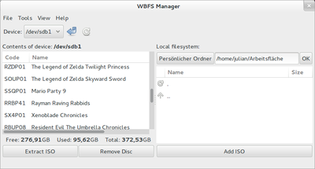

WBFS Manager
Archivierte Anleitung
Dieser Artikel wurde archiviert, da er - oder Teile daraus - nur noch unter einer älteren Ubuntu-Version nutzbar ist. Diese Anleitung wird vom Wiki-Team weder auf Richtigkeit überprüft noch anderweitig gepflegt. Zusätzlich wurde der Artikel für weitere Änderungen gesperrt.
Zum Verständnis dieses Artikels sind folgende Seiten hilfreich:
Von Spielen / CDs für die Nintendo Wii kann man - wie von anderen CDs auch - Abbilder (.iso Dateien) anfertigen. Um diese Abbilder zu erzeugen, kann man eines der verschiedenen Brennprogramme verwenden, wenn man über das entsprechende Laufwerk und die original Spiele-Disk verfügt.
Weiterhin verfügt die Wii über zwei USB-Anschlüsse, mit deren Hilfe man die Backups starten kann. Möchte man diese Backups auf der Wii ohne Spiele-Disk abspielen, so muss das Backup des Spiels auf einem USB-Datenträger in einer Partition mit dem "WBFS" (Wii Backup File System)-Dateisystem abgelegt werden.
Der WBFS Manager ist ein Werkzeug, mit welchem man Festplatten oder USB-Speicher mit dem WBFS-Dateisystem formatieren kann. Die Anwendung verwaltet außerdem die Backups der Spiele auf dem Datenträger. Einfaches Hinzufügen und Entfernen der Disc-Abbilder ist mithilfe einer grafischen Oberfläche möglich. Um die Abbilder letzendlich auf der Wii abzuspielen, ist eine Software-Modifikation auf der Wii notwendig. Hierzu sei auf das entsprechende Forum der Wii Homebrew Crew  verwiesen.
verwiesen.
Vorbereitung¶
Zuerst müssen die folgende Pakete installiert werden[1], damit der WBFS-Manager später läuft:
libgtk2.0-dev
libglade2-dev
 mit apturl
mit apturl
Paketliste zum Kopieren:
sudo apt-get install libgtk2.0-dev libglade2-dev
sudo aptitude install libgtk2.0-dev libglade2-dev
Download¶
Das Programmarchiv kann von der Projektseite bezogen werden.
linux-wbfs-manager-VERSION.tar.gz
Hinweis!
Fremdsoftware kann das System gefährden.
Installation¶
Nachdem das Programmarchiv linux-wbfs-manager-VERSION.tar.gz heruntergeladen und entpackt wurde, wechselt man auf dem Terminal[3] in das Downloadverzeichnis und startet hier den Kompiliervorgang. In folgendem Beispiel wird von dem normalen Downloadverzeichnis ~/Downloads ausgegangen.
cd ~/Downloads/linux-wbfs-manager make
Im Ordner ~/Downloads/linux-wbfs-manager entstand nun die Datei wbfs_gtk. Prinzipiell ist der Installationsvorgang nun abgeschlossen, und das Programm ist lauffähig. Das Programm muss mit Root-Rechten[4] gestart werden, da es Datenträger formatieren und mounten muss.
Programm starten¶
Für den folgenden Programmaufruf müssen zusätzlich noch Root-Rechte[4] erlangt werden:
~/Downloads/linux-wbfs-manager/wbfs_gtk
Um den WBFS Manager bequemer zu starten wird empfohlen, das Programm nach /usr/local/bin zu verschieben.
cd ~/Downloads/linux-wbfs-manager sudo cp wbfs_gtk /usr/local/bin
Von nun an kann das Programm mit folgendem Befehl und zusätzlichen Root-Rechten[4] gestartet werden:
wbfs_gtk
Wer einen Anwendungsstarter benötigt, muss diesen selbst anlegen. Hierzu sei z.B auf Arronax verwiesen.
Bedienung¶

Speichermedium formatieren¶
Zunächst ist es wichtig, dass das Speichermedium ausgehangen sein muss, da ansonsten ein Fehler beim Formatieren auftritt.
Achtung!
Der folgende Formatierungsvorgang löscht alle Dateien, welche sich auf der Zielpartition befinden.
Aus dem Auswahlmenü wählt man die Zielpartition aus. Dann wird aus dem Menü am oberen Programmrand der Menüpunkt "Tools -> Initialize WBFS partition" gewählt.
Spiel kopieren¶
Auf der rechten Seite des Programmfensters kann mithilfe des integrierten Dateibrowsers eine .iso Datei ausgewählt werden. Der Klick auf "Add ISO" startet den Kopiervorgang.
Spiel löschen¶
Auf der linken Seite des Programmfensters markiert man mit der Maus das zu löschende Spiel, und klickt anschließend auf "Remove Disc".
- Erstellt mit Inyoka
-
 2004 – 2017 ubuntuusers.de • Einige Rechte vorbehalten
2004 – 2017 ubuntuusers.de • Einige Rechte vorbehalten
Lizenz • Kontakt • Datenschutz • Impressum • Serverstatus -
Serverhousing gespendet von